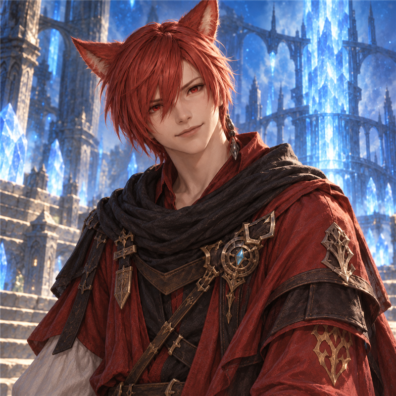
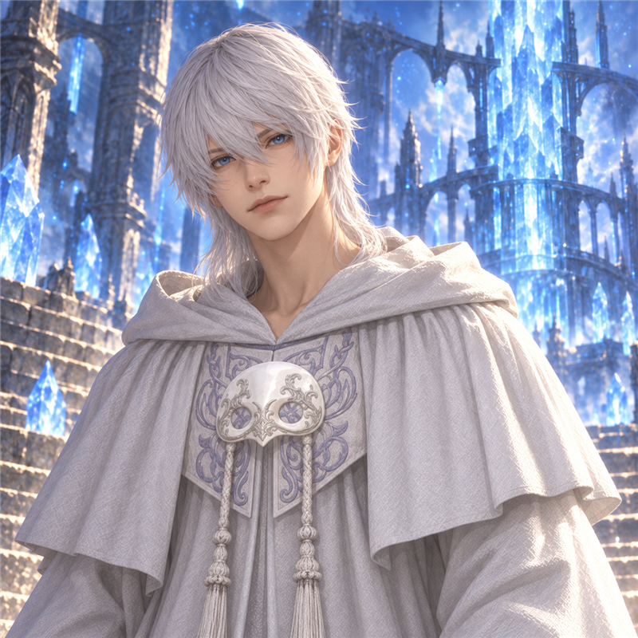

FFXIV · YOUR LOVE SPECTRUM
FF14 中最適合你的男朋友實線：你的偏好 ／ 虛線：角色基準
WHY YOUR HEART SAYS YES
FFXIV / 戀愛偏好測驗
讓你心動的，是說出口的喜歡，
還是那些被好好記住的小事？
從 24 個日常情境，找出你偏愛的相處方式。


原來，你的心動有這樣的形狀。
FFXIV · YOUR LOVE SPECTRUM
FF14 中最適合你的男朋友WHY YOUR HEART SAYS YES